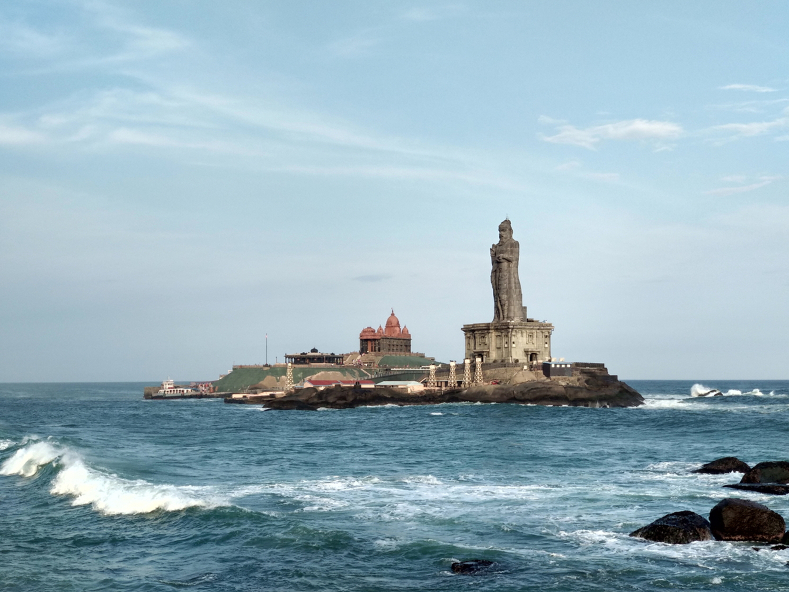
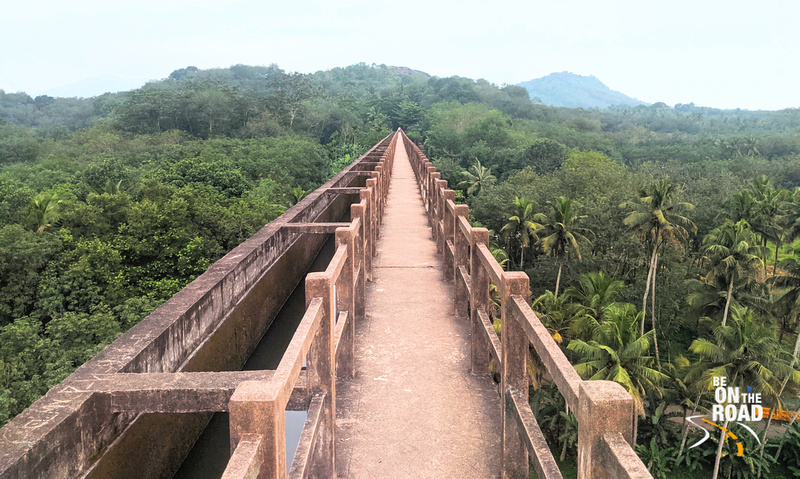

Places to Visit in Kanniyakumari

Kanniyakumari Beach
Kanyakumari is a coastal town in the state of Tamil Nadu on India's southern tip. Jutting into the Laccadive Sea, the town was known as Cape Comorin during British rule and is popular for watching sunrise and sunset over the ocean. It's also a noted pilgrimage site thanks to its Bagavathi Amman Temple, dedicated to a consort of Shiva, and its Our Lady of Ransom Church, a center of Indian Catholicism.

Mathoor Aqueduct
Mathur Aqueduct is an aqueduct in Thiruvattar taluk of Kanniyakumari district of Indian state of Tamil Nadu. It was built in 1966 over the Pahrali River and takes its name from Mathoor, a hamlet near the aqueduct, which is about 3 km from Thiruvattar town and about 60 km from Kanniyakumari.